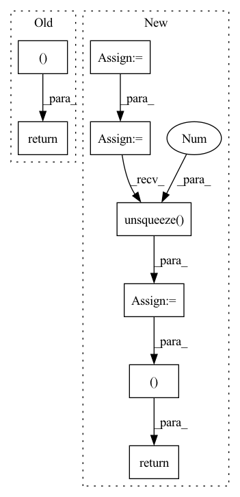

Pattern ID :713
Before Change
out = torch.matmul(w.transpose(1, 2), encoder_outputs)
return out, w
class DurationPredictor(nn.Module):
Duration Parameter Predictor After Change
c = c.unsqueeze(2)
s = self.range_param_predictor(encoder_outputs, duration, mask).unsqueeze(-1)
g = torch.distributions.normal.Normal(loc=c, scale=s)
w = self.get_alignment_energies(g, t) // [B, L, T]
if mask is not None:
w = w.masked_fill(mask.unsqueeze(-1), 0.0)
attn = w / (torch.sum(w, dim=1).unsqueeze(1 ) + 1e-8) // [B, L, T]
out = torch.bmm(attn.transpose(1, 2), encoder_outputs)
return out, attn
class DurationPredictor(nn.Module):
Duration Parameter Predictor In pattern: SUPERPATTERN
Frequency: 3
Non-data size: 8
Instances Fragment ID: 2712617
Project Name: keonlee9420/wavegrad2
Commit Name: 523ec241c64ab635218f32d071fd85fbc469e178
Time: 2021-07-13
Author: keonlee9420@gmail.com
File Name: model/modules.py
M Class Name: GaussianUpsampling
N Class Name: GaussianUpsampling
M Method Name: forward(4)
N Method Name: forward(4)
M Parent Class: nn.Module
N Parent Class: nn.Module
M File Name: model/modules.py
N File Name: model/modules.py
M Start Line: 115
M End Line: 135
N Start Line: 120
N End Line: 134
Before Change
stats = self.proj(x) * x_mask
m, logs = torch.split(stats, self.out_channels, dim=1)
return x, m, logs, x_mask
After Change
text_padded_embedded = torch.transpose(text_padded_embedded, 1, -1)
//text_padded_embedded.size() : torch.Size([batch_size, self.hidden_channels, text_length])
//マスクの作成
max_text_length = text_padded_embedded.size(2)
progression = torch.arange(max_text_length, dtype=text_lengths.dtype, device=text_lengths.device)
text_mask = (progression.unsqueeze(0 ) < text_lengths.unsqueeze(1))
text_mask = torch.unsqueeze(text_mask, 1).to(text_padded_embedded.dtype)
//text_mask.size() : torch.Size([batch_size, 1, text_length])
text_encoded = self.encoder(text_padded_embedded * text_mask, text_mask)
//text_encoded.size() : torch.Size([batch_size, self.hidden_channels, text_length])
stats = self.proj(text_encoded) * text_mask
m, logs = torch.split(stats, self.out_channels, dim=1)
return text_encoded, m, logs, text_mask
Fragment ID: 2712619
Project Name: zassou65535/vits
Commit Name: 00ade3b39bd67dc21d25b09c5b535374f2c8bd1d
Time: 2022-01-17
Author: gravity@kuf.biglobe.ne.jp
File Name: module/model_component/text_encoder.py
M Class Name: TextEncoder
N Class Name: TextEncoder
M Method Name: forward(3)
N Method Name: forward(3)
M Parent Class: nn.Module
N Parent Class: nn.Module
M File Name: module/model_component/text_encoder.py
N File Name: module/model_component/text_encoder.py
M Start Line: 292
M End Line: 304
N Start Line: 287
N End Line: 303
Before Change
raise RuntimeError("Unknown value for attention norm type")
context = torch.bmm(alignment.unsqueeze(1), inputs)
context = context.squeeze(1)
return context, alignment
class Postnet(nn.Module):
def __init__(self, mel_dim, num_convs=5):After Change
raise RuntimeError("Unknown value for attention norm type")
if self.forward_attn:
// forward attention
prev_alpha = F.pad(self.alpha[:, :-1].clone(), (1, 0, 0, 0)).to(inputs.device)
self.alpha = (((1-self.u) * self.alpha.clone().to(inputs.device) + self.u * prev_alpha) + 1e-7) * alignment
alpha_norm = self.alpha / self.alpha.sum(dim=1).unsqueeze(1 )
// compute context
context = torch.bmm(alpha_norm.unsqueeze(1), inputs)
context = context.squeeze(1)
return context, alpha_norm, alignment
else:
context = torch.bmm(alignment.unsqueeze(1), inputs)
context = context.squeeze(1)
return context, alignment, alignment Fragment ID: 2712622
Project Name: coqui-ai/tts
Commit Name: 961af0f5cdefbb5f267671f6847cf05659962d6c
Time: 2019-04-05
Author: egolge@mozilla.com
File Name: layers/tacotron2.py
M Class Name: Attention
N Class Name: Attention
M Method Name: forward(6)
N Method Name: forward(6)
M Parent Class: nn.Module
N Parent Class: nn.Module
M File Name: layers/tacotron2.py
N File Name: layers/tacotron2.py
M Start Line: 173
M End Line: 175
N Start Line: 193
N End Line: 208